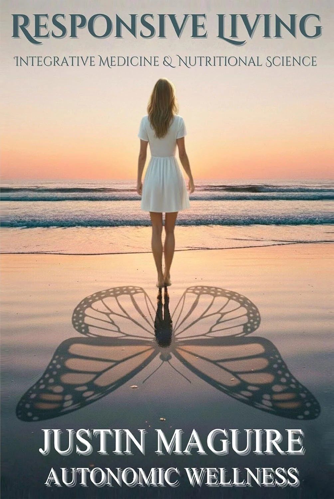

Autonomic Coaching
Autonomic CoachingBetween stress and response, there’s a space.
Responsive Living follows one man who learned to widen that space and explains the biology of what happens when it closes.
If you’re exhausted, wired, and told your labs are normal, this is the space your body lost.

Endorsed by
“This isn’t a quick fix or another trendy protocol; it’s a roadmap that can help you understand your body at a deeper level.”
“The immune system is not broken. It is responding appropriately to a world that has changed faster than our biology.”
“It’s a framework for understanding how mitochondria, hormones, and immune pathways interlock, and how to respond when the body’s signals get out of rhythm.”
“It bridges the divide between molecular science and lived human experience.”
Why do I still feel tired after a full night’s sleep?
- You sleep eight hours and wake up already tired.
- Your focus is gone by mid-afternoon, and more coffee only makes you jittery.
- You can’t switch off, even when the day is over.
- Every protocol you try contradicts the last one.
- You’ve stopped trusting your body to cope the way it used to.
If so, there’s a reason, and it starts with a gap most of us never learn to see.
What is Responsive Living?
Responsive Living is the practice of reading your biology, your psychology, and your daily life together, and adjusting as each one changes. There’s a gap between what happens to you and how your body responds. Under constant stress, that gap closes, and the body stays on alert. Responsive Living widens it again.
For most of human history, stress was physical. You ran, fought, or hid, and the stress response burned itself out in the action. Today’s stress is mental: deadlines, money, a phone that never stops. The alarm goes off, and nothing moves. Justin Maguire calls this static physiology, and the book traces how a body stuck in it can stay in defense mode for years: tired, inflamed, and slow to recover.
Under constant stress, that gap closes, and the body stays on alert.
Responsive Living widens it again.
“Between stimulus and response, there is a space. In that space is our power to choose our response. In our response lies our growth and our freedom.”Viktor E. Frankl
The book shows how this plays out in a real body, through one man’s story.
Meet James: why this book is told as a story
Immunology is hard to follow in a textbook. It gets easier when you watch it happen to someone, so Justin wrote this book as a story.
James is not a real person. He’s the embodiment of many people with similar struggles, and the book follows him from childhood eczema and constant fatigue through to understanding why his body behaved the way it did. His symptoms lean toward allergies, gut trouble, and skin flares. Yours may look different. The pattern underneath is the one the book teaches you to read.
- Childhood eczema
- Constant fatigue
- Allergies, gut trouble, and skin flares
- Understanding why his body behaved the way it did
What you’ll understand by the end of the book
- 01
Why your body ends up here
How mitochondria, immune balance, and a lifetime of exposures set the stage.
- 02
Where it hides and how it shows up
From the mouth to your hormones and thyroid, and how to recognize the signs.
- 03
What shifts the pattern
The ideas behind the clinical options practitioners use to support energy, hormone, and immune balance, and why each is matched to the person. These chapters are for understanding and for better conversations with your doctor.
- 04
How to sustain it and measure it
Fasting, calming the nervous system, what lab work can and can’t tell you, and how food affects immune balance.
Is Responsive Living right for you?
The book suits some readers better than others.
This book is for you if
- You’re exhausted and nobody can tell you why.
- You’ve tried a lot and nothing has lasted.
- You want to understand your own biology rather than follow instructions.
- You learn better from a story than from a textbook.
This book isn’t for you if
- You want a supplement list or a quick fix.
- You want a personal treatment plan.
- You want a diagnosis or a replacement for medical care.
- You want a one-size-fits-all plan.
Read the first chapter free
If that sounds like you, start with the introduction and Chapter 1, “Mitochondria: the unseen engine of immunity and energy.” Enter your email and we’ll send it straight to you.
We’ll send the chapter and occasional notes from Justin. Unsubscribe any time.
Get Responsive Living
Ready to read the whole book?
Published by Golden Ray Books. ISBN 979-8-9945080-2-2 (paperback).
FAQs
Still deciding? These are the questions readers ask most.
What is Responsive Living?
Responsive Living is the practice of reading your biology, your psychology and your daily life together, and adjusting as each one changes. It’s also the title of Justin Maguire’s book, which explains the idea through one man’s story.
Is this book medical advice?
No. It’s written for information and understanding, and the author isn’t a medical professional. Talk to a qualified healthcare provider before making decisions about your health. If you need a doctor’s review or testing, see Autonomic Wellness. For anything urgent, contact your own doctor or emergency services.
Is the book only about allergies?
No. The story follows a man whose symptoms lean toward allergies, gut and skin trouble, but it covers energy, thyroid, hormones, stress, and the nervous system too.
Does the book tell me what to take?
It explains how different approaches work and includes reference notes on protocols. None of it is a personal plan, and what suits you depends on your lab results, your history, and a qualified clinician.
Do I need lab work to read the book?
No. You can read the book without it. Lab work helps once you want to apply the ideas, and the later chapters explain what it can and can’t tell you.
How is this different from biohacking?
Biohacking often starts with a tool or a protocol. Responsive Living starts with how your body responds to stress and why, then lets that shape every choice.
Is there an audiobook?
Yes. It’s available on Audible, Spotify, and Apple.
The book explains the system. Coaching applies it to your biology.
Autonomic Coaching is scientist-led, one-to-one health coaching that reads your lab results, your daily tracking and your psychology together, week by week, and adjusts the plan as your life changes. You learn to understand your own biology, so you lead the decisions.
Looking for testing or a licensed doctor’s review? That’s Autonomic Wellness.
Visit Autonomic Wellness